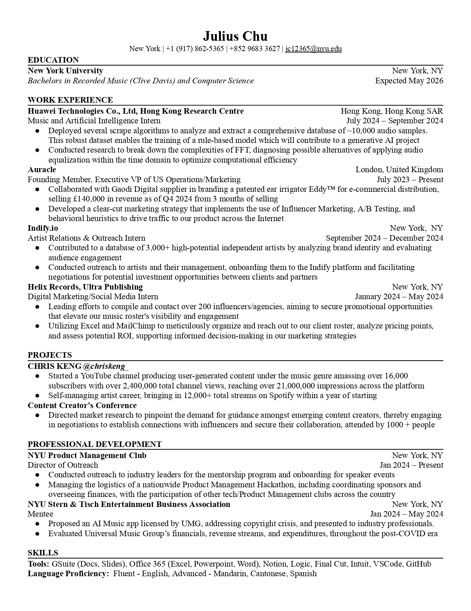
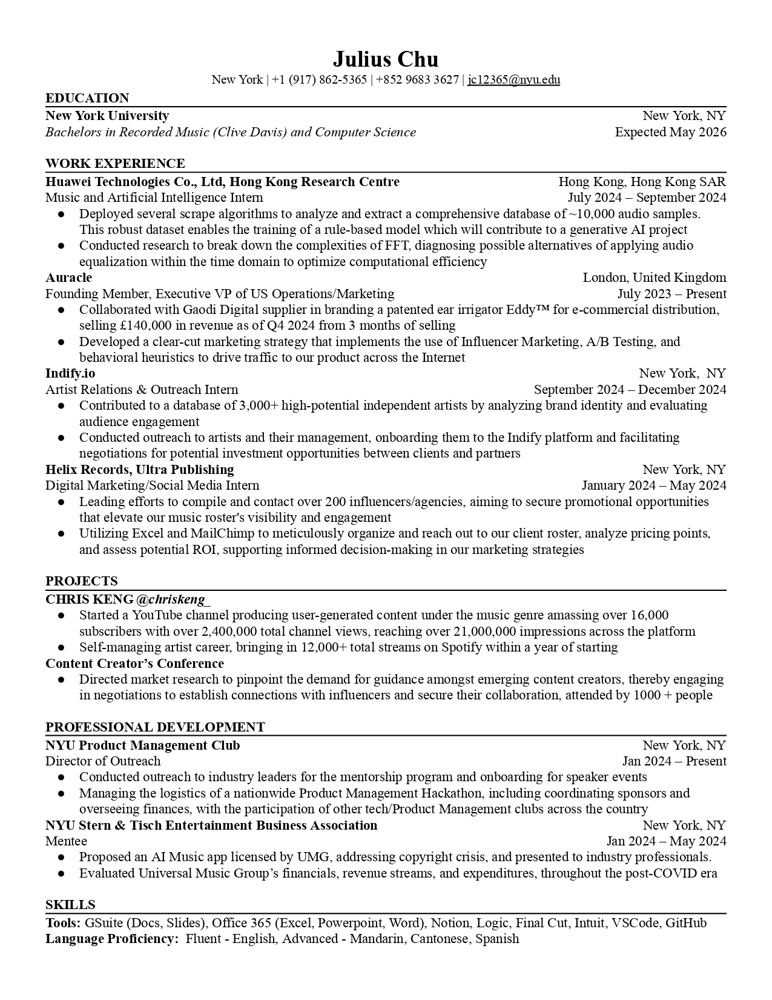

Work Experience & Professional Development
While I continue to explore in my journey of professional development, my hopes is to reconcile my passion for music and technology to lead a career in the music business.
While I continue to explore in my journey of professional development, my hopes is to reconcile my passion for music and technology to lead a career in the music business.
